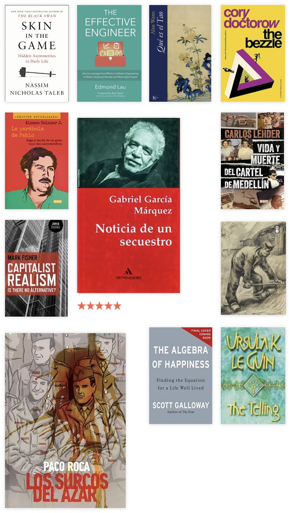

These are some notes about the books I read this year:
Non-fiction

“Skin in the game” by Nassim Nicholas Taleb
My first Taleb book and a really good start. The main idea can be summed up like this: it’s bad when people make decisions without being affected by the consequences of those decisions. This is why some experts are hated while others are not. Of course, this has consequences from the point of view of justice (e.g. a politician proposing changes to the public schooling system will be unaffected because their children already go to private schools), but the most interesting interpretation is about how we learn and how we come to know what we know (e.g. a consultant won’t find out what needs to be fixed in a company because they’re incentivized to sell a consultancy service, not to improve the conditions of the company they’re consulting for).
Some bangers:
Bureaucracy is a construction by which a person is conveniently separated from the consequences of his or her actions.
(…) The same mechanism of transferring risk also impedes learning.
(…) in the absence of skin in the game, journalists will imitate, to be safe, the opinion of other journalists, thus creating monoculture and collective mirages.
“The algebra of happiness” by Scott Galloway
This is something of a memoir with a bunch of life advice. The advice comes from a guy who , nowadays, is very rich and comes from some privilege (which he acknowledges because that’s the kind of thing you have to do nowadays, lest some people feel you are bragging or what not). I think the bits I found more endearing were related to his mother and his children. But some of the things he says about grinding at work feels like that work-addicted American culture which seems to sacrifice a lot of your personal life. Some bits I liked:
The definition of “rich” is having passive income greater than your burn.
It didn’t take long to realize that the secret is to find something you’re good at. The rewards and recognition that stem from being great at something will make you passionate about whatever that something is.
Professional success is the means, not the end. The end is economic security for your family and, more important, meaningful relationships with family and friends.
“Capitalist realism” by Mark Fisher
Capitalism is bad, apparently. We recognize that capitalism is bad, yet we still participate in it because we think that’s the most realistic course of action. This is a surprisingly easy-to-digest book, given that I feel it falls in the philosophy/sociology camp. I recommend it; it’s short and digestible. But I recommend even more being an active participant in capitalism.
“Qué es el Tao” (“What is Tao”) by Alan Watts
A short introduction to Taoism. I still can’t reconcile some of these ideas, as they seem to advocate being passive with respect to your own life, but I’m probably misunderstanding.
“Do the work” by Steven Pressfield
Similar to “The war of Art” by the same author, this book is about procrastination, about how we avoid the work that we know that we need to do and how to surpass this Resistance. It’s an OK book, I’d say.
“The effective engineer” by Edmond Lau
Some interesting ideas on how to progress as a software engineer. Some concepts I was already familiar with, others not. I’d recommend this for someone in the middle of their career, progressing toward a senior position.
“Los surcos del azar” (“Twists Of Fate”) by Paco Roca
This is a graphic novel, written after the testimonies of former Republican Spanish soldiers who fled Spain and would eventually join French forces in the liberation of Paris. It’s an incredible story, beautifully illustrated.
History: The drug wars and Colombia in the early 90s
I read three books about the drug wars and the violence in Colombia during the early ’90s. This period in the history of Colombia has interested me recently. I know drug trafficking brings a lot of shame to Colombians, but the reality is that it’s a big part of our identity—for worse. I think it’s interesting to learn about the few government officials who faced Escobar and to see how much they needed to do with so few resources (back in the ’80s and early ’90s, the police and army were just a handful of men with no professional training).
“La parábola de Pablo” (“The parable of Pablo”) by Alonso Salazar
A detailed biography of Pablo Escobar, maybe the most notorious Colombian drug-lord. Some interesting bits were:
- Escobar’s downfall started when he covertly betrayed some of his friends. This led to the creation of the Pepes who played an important role when he was finally killed.
- The Cali Cartel learned a lot from Escobar’s fall: they didn’t make as much noise and they corrupted government officials, instead of fighting them.
- By the end, Escobar was really desperate. He considered joining or creating a guerrilla group in order to gain some political status and be able to negotiate a “peace” deal with the government.
- After his escape and pursuit, Escobar got in contact with Alberto Villamizar (a government official that’s one of the protagonists of “Noticia de un secuestro”) to propose a surrender. Villamizar got in touch with the minister of defense, who responded that this time the government would take a chance defeating Escobar (which meant killing him).
“Noticia de un secuestro” (“News of a Kidnapping”) by Gabriel García Márquez
This is a masterful chronicle from Gabriel García Márquez about one of the most important episodes during the whole Escobar saga. In order to press the government to reject a law approving the extradition of Colombian nationals to the U.S., Escobar kidnapped several important figures related to Colombian politics. One of the protagonists is Alberto Villamizar, whose wife was one of the victims. He became a crucial figure when Escobar finally surrendered, and would go on to become Colombia’s first kidnapping czar, which says a lot about how the country was doing back then.
A bit I liked (translated):
Pablo Escobar had achieved a credibility that the guerrillas never enjoyed, even in their best days. People ended up believing the lies of “Los Extraditables” more than the government’s truths.
“Vida y muerte del cartel de Medellín” (“Life and death of the Medellín Cartel”) by Carlos Lehder
An auto-biography of Carlos Lehder, one of the drug lords from the Medellín Cartel. It’s an interesting read as it is from an internal point of view: he details his logistics, how he set the routes, how he bribed government officials in Bahamas and so on. He expresses some remorse but it feels like a formality. I wouldn’t say this book gives much insight about the war on drugs.
Fiction
“The Telling” by Ursula K. Le Guin
Le Guin has become my favorite science fiction writer. Her books are usually very anthropological and they are about clashes of worlds. Her protagonists are scientists, humanists, or kind of anthropologists, tasked explicitly or not with understanding another world. This one is no exception and it includes a totalitarian state in which a religion (similar to Taoism) has been suppressed in the name of “progress”.
“The Bezzle” by Cory Doctorow
A story about corruption, rent-seeking and scammers. This is the first book from Cory Doctorow I read so I’m not sure if it’s representative of how he writes. I liked it.